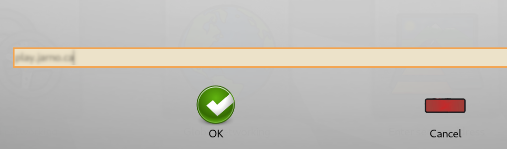

Click on the globe labelled "Online". At the top, just below the title, you can click the yellow button to set your in-game name. You don't have to set a password.
To connect to out server, click on "Enter server address". Then type in {{ site.content.domain_name }} and click on "OK".
You will then be placed in the lobby of our game server and ready to go!